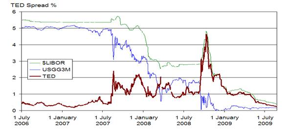

🎵 Audio Narration
The 2008 financial crisis was a global economic downturn triggered by the collapse of the U.S. housing market and the widespread failure of financial institutions. Its roots lie in years of risky lending practices, particularly subprime mortgages—loans given to borrowers with poor credit. Financial firms bundled these risky loans into complex securities called mortgage-backed securities (MBS) and collateralized debt obligations (CDOs), which were sold to investors worldwide.
As housing prices began to fall in 2006–2007, many homeowners defaulted on their loans, causing the value of MBS and CDOs to plummet. Major financial institutions like Lehman Brothers collapsed, while others like AIG, Bear Stearns, and Merrill Lynch required government bailouts or mergers to avoid failure. The crisis led to a severe credit crunch, stock market crash, and global recession.
Government Response and Reforms
Governments and central banks responded with massive bailouts, monetary easing, and stimulus packages to stabilize the financial system. The crisis exposed significant flaws in regulatory oversight and risk management, prompting reforms such as the Dodd-Frank Act in the U.S.
Its effects were widespread—millions lost their homes, jobs, and savings, and it reshaped economic policy and financial regulation worldwide.
Cultural Impact: Persona 4 and Economic Uncertainty
On the other hand...Persona 4 is a Japanese role-playing game developed by Atlus, originally released for the PlayStation 2 in 2008. It's the fourth main installment in the Persona series and blends traditional turn-based RPG mechanics with social simulation elements.
Set in the rural town of Inaba, the story follows a high school student who moves in with his uncle and cousin for a year. Shortly after his arrival, a series of bizarre murders occur, with victims found hanging from television antennas after foggy nights.
The Midnight Channel Mystery
The protagonist and his friends discover the Midnight Channel, a mysterious TV world linked to the murders. They awaken Persona powers—manifestations of their inner selves—and enter the TV world to rescue those who appear on the channel, battling Shadows and uncovering the truth behind the killings.
The game explores themes of identity, truth, and acceptance. Players manage daily life—building relationships (Social Links), attending school, and working part-time—while also exploring dungeons and battling enemies in the TV world.
Truth and Consequences
The story culminates in uncovering the real mastermind behind the murders, challenging the characters to confront uncomfortable truths and the consequences of their choices.
Interestingly, both the 2008 financial crisis and Persona 4 share themes of hidden truths, the consequences of ignoring reality, and the importance of facing difficult situations head-on. While one represents real-world economic collapse, the other uses supernatural elements to explore similar psychological and social dynamics.